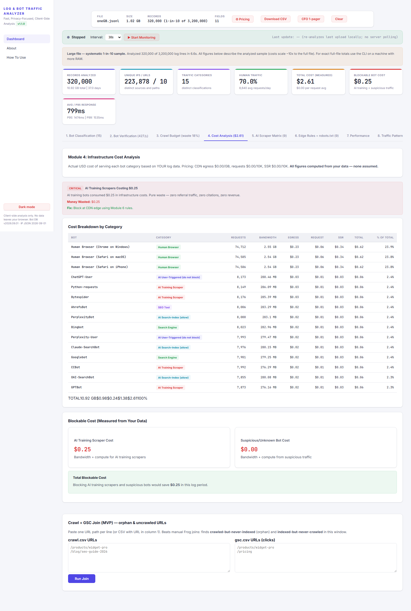

← Back to free analyzer (no upload)
I streamed 3.2M log lines in-browser: $2.61, $0.25 blockable
Not a toy demo. On 2026-09-11 the tool ran end-to-end in headless Chromium against a real 1.02 GB NDJSON log (3,200,000 lines, seed 7). Every number below is measured.
| Measurement | Result |
|---|---|
| File | oneGB.jsonl, 1.02 GB, 3,200,000 lines |
| Read + parsed + analyzed | 320,000 of 3,200,000 (1-in-10) in 6.6 s, 13.0 s wall |
| Records / bandwidth (sample) | 320,000 records, 10.92 GB, 223,878 unique IPs |
| Traffic split | 70.0% human, 15 categories |
| Cost (CloudFront defaults) | $2.61 total, $0.25 blockable (training only) |
| Response profile | avg 799 ms, P95 1,474 ms, P99 1,535 ms |
| Threats / warnings | 19,272 suspicious, 427 verification warnings |
| Trap waste | 18% trap bandwidth |


What fired
9 Cloudflare rules fired on the sample. 75 signatures classified, 4-layer verification surfaced (not hid) 427 unusual checks. The on-screen banner states sampling honestly — figures describe the sample and scale ~10×.
Run your own log
Run your own log — no upload, files never leave your machine · GitHub + EXPECTED.md